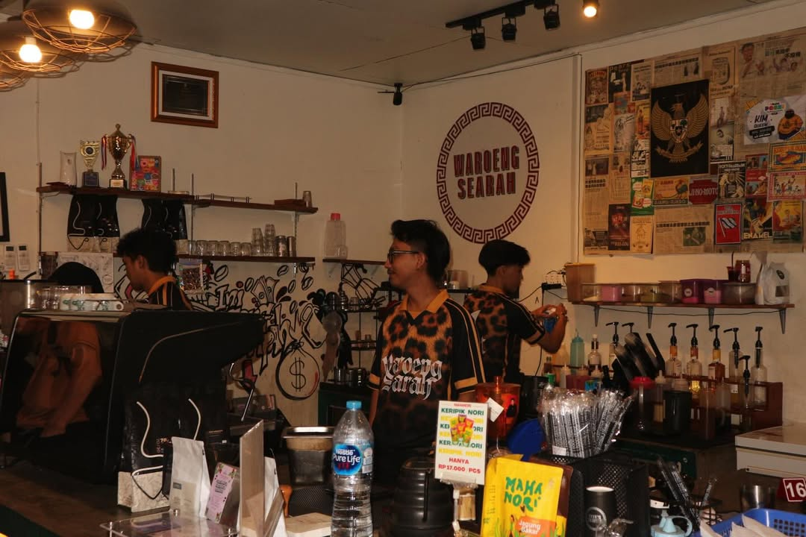
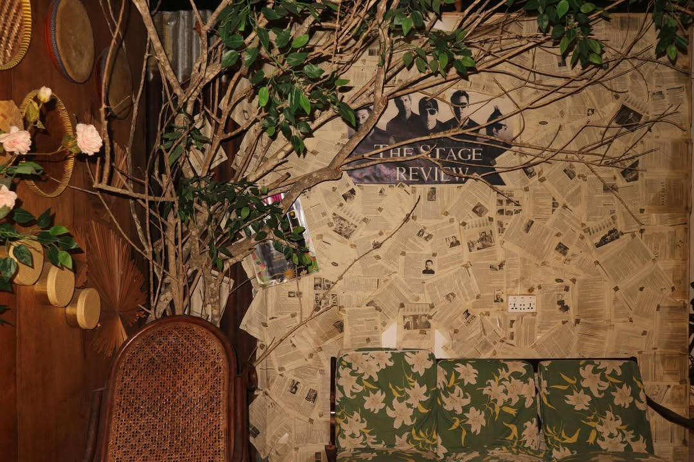

W
Warong Searah
Kopi & Kuliner Nusantara

Tempat ngopi dengan rasa autentik, suasana vintage, dan cita rasa Nusantara yang tak terlupakan.

Cerita Kami
Warong Searah hadir dari keinginan sederhana: membuat tempat singgah yang terasa akrab sejak pertama kali didatangi. Di tengah ramainya Tanjungpinang, kami ingin menjadi ruang yang pelan, hangat, dan punya rasa rumah untuk siapa pun yang datang.
Setiap sudutnya dirancang untuk menemani banyak cerita. Ada kopi untuk memulai obrolan, makanan rumahan untuk mengisi jeda, suasana vintage untuk bernostalgia, dan photo box sebagai tempat menyimpan momen kecil yang sering kali justru paling berkesan.
Kata Mereka
Dengar langsung dari pelanggan setia yang sudah merasakan kelezatannya.
"Kopi di sini beda banget! Aroma rempahnya terasa tapi tetap enak. Sudah 3 tahun langganan dan nggak bosan-bosan."
"Good vibes, good atmosphere, homie — vintage tapi awesome! Spot foto juga banyak banget di sini."
"Tempatnya nyaman banget buat kerja atau nongkrong bareng teman. Wi-Fi kencang, kopi enak, harga ramah kantong!"
"Aesthetic, retro side banget. Cocok banget buat konten. Kopinya juga tidak mengecewakan, mantap terus!"
"Es kopi susunya juara! Gula arennya pas, tidak terlalu manis. Selalu jadi pilihan pertama setiap pagi saya."
"Pelayanannya ramah dan tempatnya klasik dengan banyak spot foto menarik. Wajib dikunjungi kalau ke Tanjungpinang!"
"Kopi di sini beda banget! Aroma rempahnya terasa tapi tetap enak. Sudah 3 tahun langganan dan nggak bosan-bosan."
"Good vibes, good atmosphere, homie — vintage tapi awesome! Spot foto juga banyak banget di sini."
"Tempatnya nyaman banget buat kerja atau nongkrong bareng teman. Wi-Fi kencang, kopi enak, harga ramah kantong!"
"Aesthetic, retro side banget. Cocok banget buat konten. Kopinya juga tidak mengecewakan, mantap terus!"
"Es kopi susunya juara! Gula arennya pas, tidak terlalu manis. Selalu jadi pilihan pertama setiap pagi saya."
"Pelayanannya ramah dan tempatnya klasik dengan banyak spot foto menarik. Wajib dikunjungi kalau ke Tanjungpinang!"
Lokasi Kami
Mampir untuk ngopi, makan santai, atau reservasi meja bersama teman.
Kami berada di area kota yang mudah dijangkau. Datang langsung atau hubungi kami dulu untuk memastikan meja tersedia.
Reservasi
Pilih meja yang masih tersedia, lalu booking langsung dari website.
Video Suasana
Lihat suasana Warong Searah lebih dekat.
Cuplikan suasana, menu, dan momen pelanggan yang membuat Warong Searah terasa hangat.